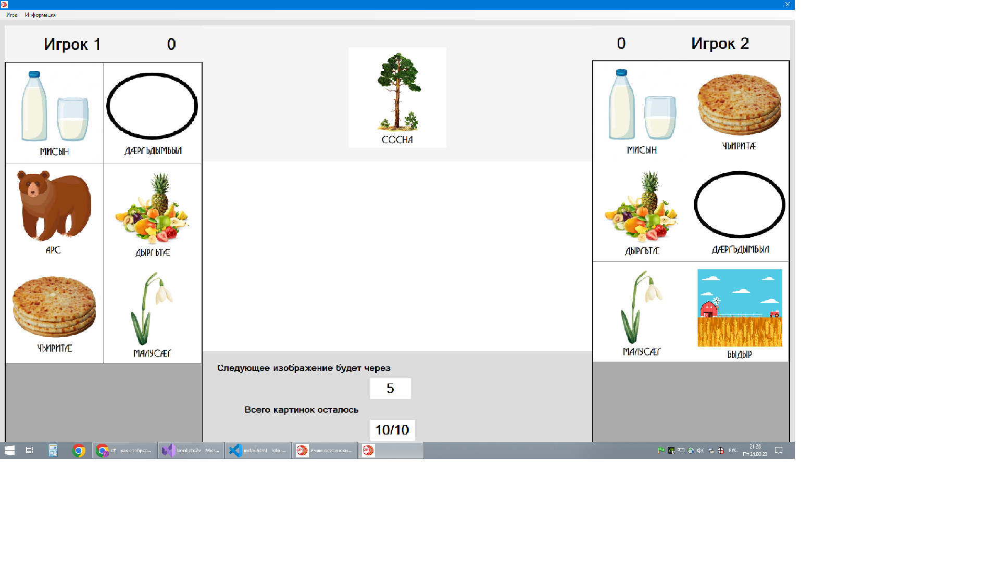
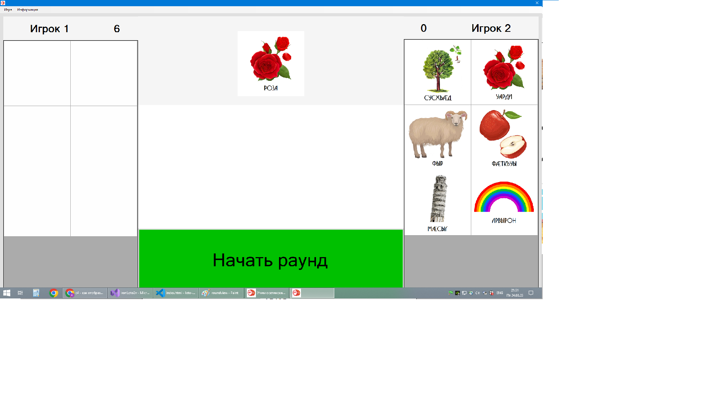
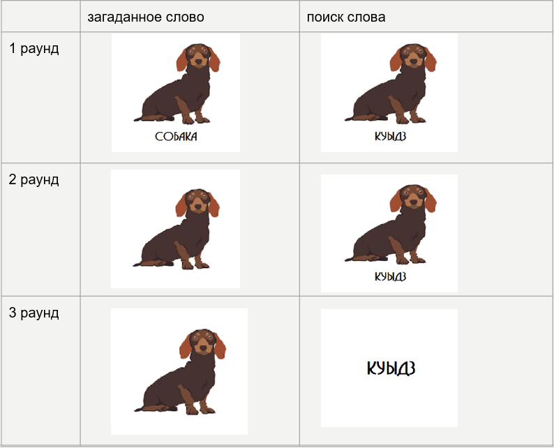
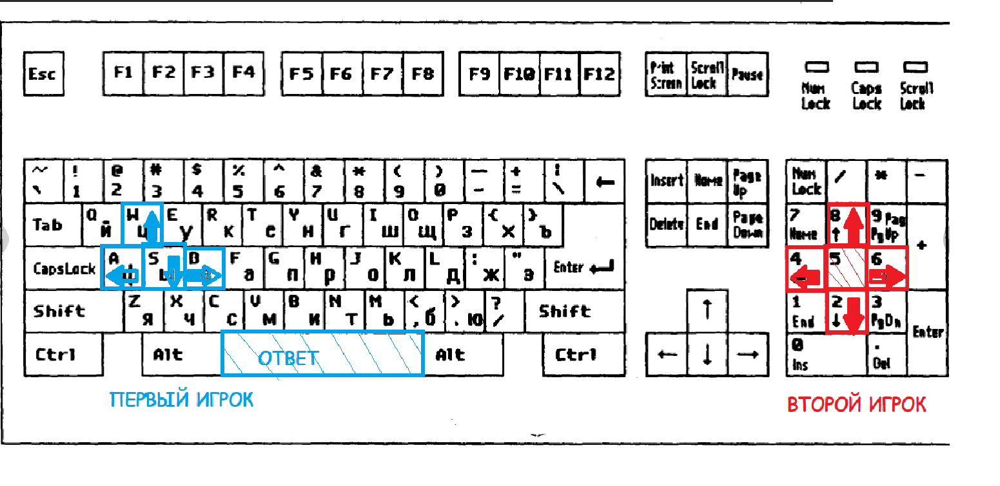

Для кого эта игра
Осетинское лото лучше всего подойдёт детям школьного возраста, желающим учить родной язык.
Также можно играть тем, кто просто хочет весело провести время. Милые картинки и необычный формат точно никого не оставят равнодушными.
Как играть
Игра рассчитана на двух человек и состоит из трёх раундов. Первые два считаются учебными, а третий уже проверяет ваши знания. В каждом из них игрокам отводится по полю с картинками.
Каждому из играющих надо отмечать картинки у себя в таблице, соответствующие изображению в центральном окошке.
За каждый правильный ответ начисляем по одному баллу. Победит тот игрок, у которого по итогам игры будет больше всего баллов.
При желании учебные раунды можно отключить перед началом игры, но если вы всё ещё слабы в осетинском языке, то лучше их включить.

Чем же отличаются раунды
В раундах отличаются типы картинок, заполняющих поля (столбец "поиск слова") и изображений, отображающихся в центральном окошке (загаданных слов).
Чтобы вам было понятнее, взгляните на таблицу ниже:
Какими кнопками ходить
Первый игрок ходит клавишами W(вверх), A(влево), S(вниз), D(вправо) и отмечает верные картинки в поле пробелом.
Второй игрок ходит клавишами 8(вверх), 4(влево), 2(вниз), 6(вправо) правой клавиатуры и отмечает верные картинки в поле клавишей 5 тоже правой клавиатуры.
Использование мышки невозможно.
Чтобы Вам было понятнее, взгляните на схему ниже (косыми линиями помечены клавиши для ввода ответа):
Цели игры
Целью данной игры является популяризация родного языка среди детей и молодёжи.
Первым этапом в изучении абсолютно любого языка является, несомненно, запоминание простых слов, их заучивание
Уже ни для кого не секрет, что самым эффективным методом обучения является обучение в игровой форме. На этом принципе базируется уже достаточное количество прочих языковых игр, имеющих довольно большую популярность среди людей
Благодаря интересному и необычному формату нашей игры всё больше и больше школьников будут играть в неё с друзьями, желая выиграть.
Секрет победы прост: чем больше слов знаешь, тем выше шансы на победу. А человек, знающий слова, уже может переходить к грамматике и строить свои первые предложения.
Расширенная версия
Если вдруг обычный формат игры вам наскучил или вы хотите лучше понять осетинскую лексику, попробуйте расширенную версию.
Увлекательные задания и красивые картинки вас гарантированно не оставят равнодушными.
А также благодаря честному подсчёту баллов вы сможете не только фиксировать свой прогресс, но и сравнивать свой результат с прогрессом друзей и других игроков.
В будущем вы сможете создавать новые карточки для обучения сами и использовать их у себя в игре. Более того, эти карточки будут иметь шанс пополнить базовый набор обучающих картинок, если пройдут проверку.
Это лишь малая часть того, что вам может дать расширенная версия.
Просто зарегистрируйтесь в игре, используя либо кнопку в верхнем меню или же кнопку прямо под этим предложением!